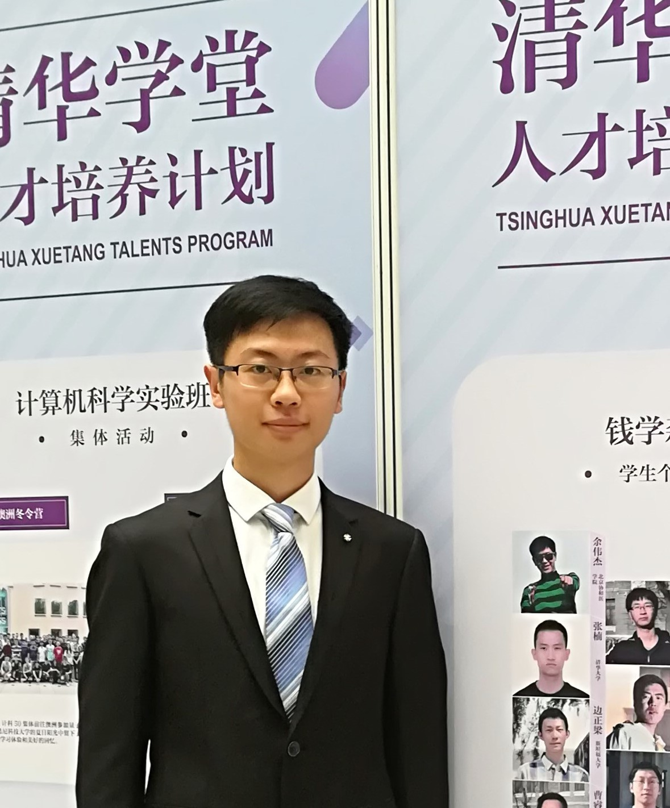

Yunfan Huang 黄云帆
PhD Candidate
Department of Engineering Mechanics
Tsinghua University
Beijing 100084, China
E-mail: yf-huang19@mails.tsinghua.edu.cn
Personal CV (download)
Education
- Ph.D (2019-2025)
- Department of Engineering Mechanics, Tsinghua University
- Supervisor: Prof. Moran Wang
- Dissertation: Electrokinetic flow and transport in liquid-liquid multiphase flow
- B.E. (2015-2019)
- Department of Engineering Mechanics (Tsien Excellence in Engineering Program), Tsinghua University
- Thesis: Electron hydrodynamics in micro-/nano-scale low-dimensional materials
Experiences
- Teaching Assistant, Heat and Mass Transfer (Prof. M. Wang), Tsinghua University, Fall 2021/2022/2023
- Visiting Student, School of Mechanical Engineering (Prof. S.T. Wereley), Purdue University, Fall 2019
- Participant (1/40), Airbus Airnovation Summer Academy, Cranfield University, July 2018
Research Interests
- Electrokinetics, especially in two-fluid multiphase system
- Micro-/nano-fluidics and physicochemical hydrodynamics
- Quantum hydrodynamics in solids, e.g., electron, phonon, ...
- Kinetic modeling and multiscale simulation of multiphysical transport
Honors and Awards
- 2023.12 Excellent teaching assistant (Eng. Mech. Dept.)
- 2021.12 Tsinghua comprehensive excellence scholarship (1st Prize)
- 2021.12 Tsinghua excellent mentor for undergraduate
- 2019.07 Bachelor's thesis with honor
- 2016.10 National scholarship
Publications
In Journal
- Y.F. Huang and M. Wang*. Solvent mixing and ion partitioning effects in spontaneous charging and electrokinetic flow of immiscible liquid-liquid interface. Physical Review Fluids, 9: 103701, 2024 (Editor's Suggestion)
- A. Alizadeh#, Y.F. Huang#, F.L. Liu, H. Daiguji, M. Wang*. A streaming-potential-based microfluidic measurement of surface charge at immiscible liquid-liquid interface. International Journal of Mechanical Sciences, 247: 108200, 2023
- X. Ran#, Y.F. Huang#, M. Wang*. A hybrid Monte Carlo-discrete ordinates method for phonon transport in micro/nanosystems with rough interfaces. International Journal of Heat and Mass Transfer, 201: 123634, 2023
- Y.F. Huang and M. Wang*. Nonnegative magnetoresistance in hydrodynamic regime of electron fluid transport in two-dimensional materials. Physical Review B, 104: 155408, 2021
- Y.F. Huang and M. Wang*. Review of spontaneous charging and electrokinetic flow at liquid-liquid interface (I): physical picture and typical phenomena. ACIS
- Y.F. Huang and M. Wang*. Review of spontaneous charging and electrokinetic flow at liquid-liquid interface (II): theory, simulation and experiment. ACIS
In Journal (others)
- Z.G. Tian, Y.F. Huang, M. Wang*. Analytical solution of inertia effect in high-speed flows through disordered porous media. Physical Review Fluids, In Press, 2024
- B. Liu, Y.F. Huang, M. Wang*. Physics and modeling of phonon wave behaviors in nanoscale heat conduction. Chinese Journal of Computational Physics, In Press, 2024 [in Chinese]
- Q.Q. Li, G. Yang, Y.F. Huang, X.K. Lu, J. Min, M. Wang*. Lattice Boltzmann method for particulate multiphase flow system. International Journal of Mechanical Sciences, 273: 109217, 2024
- Y.R. Li, Y.F. Huang, X.K. Lu, M. Wang*. Criterions of phase transitions in dispersed multiphase systems based on an extended lattice model. Langmuir, 39: 17021, 2023
- W. Liu, Y.F. Huang, M. Wang*. Extended space charge in electroconvective flow near ion-selective surfaces. IJMS
- W. Liu, Y.F. Huang, M. Wang*. Flow transition triggered by strong capacitive charging near polarizable metal interfaces. Nature Physics
- M.B. Zhang, Z.G. Tian, Y.F. Huang, M. Wang*. Flow regimes and criterions of gas flow in porous media by experiments. PRF
- X.K. Lu, Q.Q. Li, G. Yang, Y.F. Huang, M. Wang*. Inertial accumulation effect on microgel particle transport and preferential flow control in disordered media. JFM
In Journal (education)
- Y.F. Huang and M. Wang*. Merging of mechanics and mathematical physics: a brief discussion on similarity method. Mechanics in Engineering, 46: 868, 2024 [in Chinese]
- Y.F. Huang. Relationship between the two loci of instant center of rigid body in plane motion. Mechanics in Engineering, 3: 306, 2017 [in Chinese]
In Conference
- Y.F. Huang, W. Liu, M. Wang*. Electrokinetic multiphase flow at spontaneously charged liquid-liquid interface: a diffuse interface model with adsorption-induced interface charge (Oral & long abstract). ICTAM 2024. Daegu, Korea. 2024.08
- Y.F. Huang, A. Alizadeh, F.L. Liu, M. Wang*. Measurement of surface charge at immiscible liquid-liquid interface using streaming-potential-on-microfluidics (Oral). InterPore 2023. Edinburgh, UK. 2023.05
- Y.F. Huang and M. Wang*. Measurement of liquid-liquid interfacial charge based on streaming potential (Oral). NCFluid 2022. Xi'an, China. 2022.11 [in Chinese]
- Y.F. Huang and M. Wang*. Hydrodynamics of low dimensional electron transport at micro-nanoscales (Oral & paper). CCTAM 2019. Hangzhou, China. 2019.08 [in Chinese]